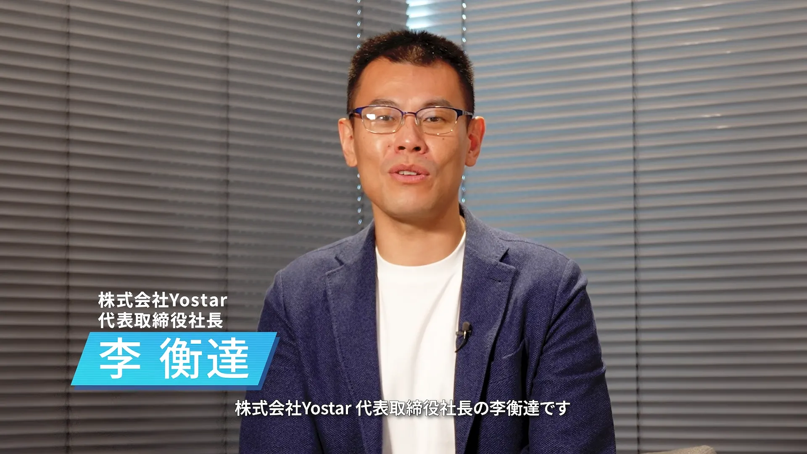
리헝다
블루 아카이브를 응원해 주시는 선생님들, 언제나 감사드립니다.
요스타 대표이사 사장 리헝다입니다.
일전에 공지해 드린 바와 같이, 요스타는 향후 블루 아카이브의 일본 지역 서비스 운영을 2027년 1월부터 넥슨에 전면적으로 이관하게 되었습니다.
오늘은 김용하 PD님과 함께 지금까지의 이야기, 그리고 앞으로의 이야기를 선생님들께 전해드리고자 이 자리를 마련하게 되었습니다.
김용하 PD님, 오늘 잘 부탁드립니다.
김용하
잘 부탁드립니다.
블루 아카이브를 항상 사랑해 주시는 선생님들, 안녕하세요.
넥슨게임즈에서 블루 아카이브 개발 총괄 PD를 맡고 있는 김용하입니다.
오늘 넥슨에 서비스 이관과 관련해서 경위를 자세히 설명드리고, 앞으로의 전개에 대해서 말씀드리기 위해서 이 자리에 나왔습니다. 잘 부탁드리겠습니다.
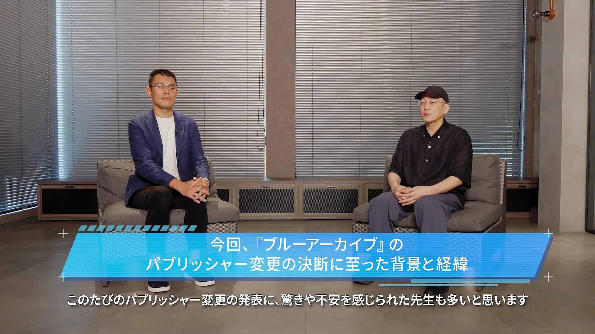
Q. 이번 『블루 아카이브』의 퍼블리셔 변경 결정에 이른 배경과 경위
김용하
이번 퍼블리셔 변경 발표에 놀라움이나 걱정을 느끼신 선생님들도 많이 계실 것이라 생각합니다.
그 마음을 저도 새기면서 이러한 결론에 이르게 된 경위에 대해서 직접 말씀드리겠습니다.
블루 아카이브는 선생님들의 따뜻한 성원에 힘입어서 내년 2월에 출시 6주년을 맞이하게 됩니다.
요스타는 서비스 시작 이래로 일본 선생님들과 진심으로 소통하면서 게임 운영뿐만 아니라 생방송과 블루아카 페스를 통해서 타이틀과 선생님 간의 소중한 관계를 쌓아 주셨습니다.
블루 아카이브가 이토록 많은 선생님들께 사랑받는 존재로 성장할 수 있었던 것은 요스타의 열정과 지대한 도움 덕분입니다. 감사하고 있습니다.
다만 요스타와의 퍼블리싱 계약 갱신 시기를 맞이하면서 현재의 운영 체제를 계속해 나갈지,
그리고 블루 아카이브의 향후 5년, 그리고 10년을 내다본 운영 체제에 대해서도 다시금 심도 있게 검토를 함께 해 왔습니다.
이 사안에 대해서는 작년 말 무렵부터 요스타 측과 협의를 시작을 해서 각자의 생각을 솔직하게 공유하면서 몇 차례나 같이 논의를 계속해 왔습니다.
그 결과 개발에서부터 운영, IP 확장까지를 일관되게 수행하기 위해서 퍼블리셔를 넥슨으로 변경하는 것으로 결론을 지었습니다.
타이틀의 미래를 생각해서 이런 결론을 이해해 주신 요스타 측에 정말 진심으로 감사를 드립니다.
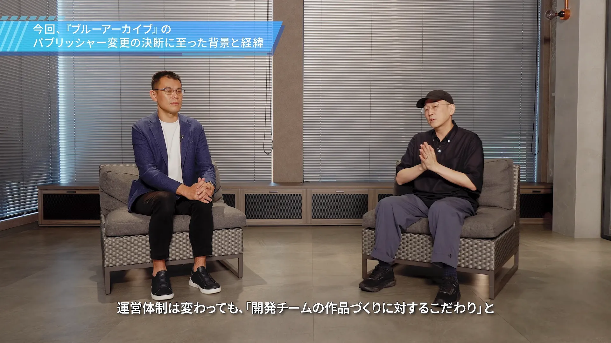
김용하
운영 체제가 바뀌더라도 개발 스튜디오의 타이틀 개발에 대한 열정과 선생님의 목소리에 귀를 기울이면서 함께 나아가겠다는 자세는 변함이 없습니다.
지금까지 선생님과 쌓아온 신뢰는 우리가 무엇보다도 계속해서 소중히 지켜 나가야 할 것이라고 생각을 합니다.
새로운 운영 체제에서도 하나하나의 저희 행동을 통해서 그 신뢰에 보답해 나가겠습니다.
앞으로도 오랫동안 사랑받을 수 있는 블루 아카이브가 될 수 있도록 그 어느 때보다 더 많은 노력을 기울이겠습니다.
앞으로도 블루 아카이브에 많은 성원 부탁드리겠습니다.
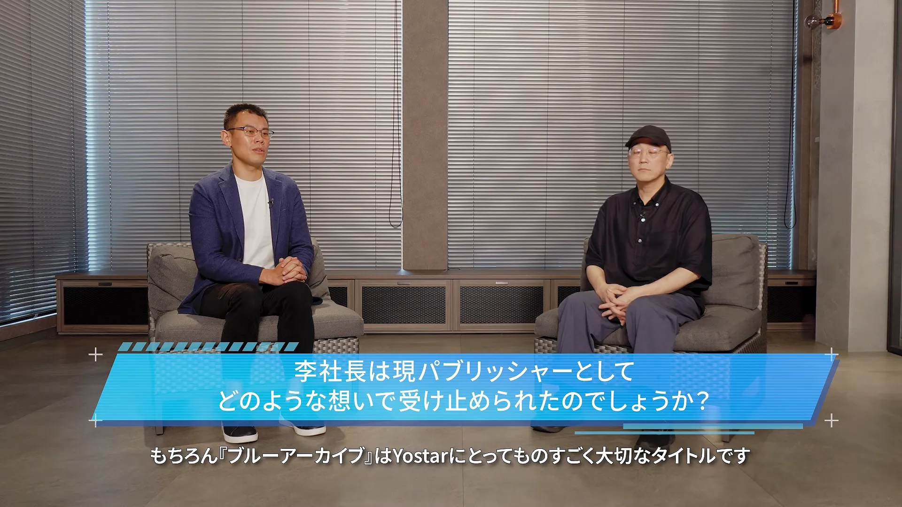
Q. 리 사장님은 현 퍼블리셔로서 어떤 심정으로 받아들이셨는지?
리헝다
물론 블루 아카이브는 요스타에게 있어 엄청나게 소중한 타이틀입니다.
원래 요스타의 비즈니스 모델은 게임 퍼블리싱이 메인 업무이기 때문에,
기본적으로 계약을 갱신할 때마다 여러 가지 가능성을 물론 염두에 두고는 있습니다.
하지만 그렇다고 해서, 아무리 사전에 가능성을 염두에 두었다 한들 오랜 세월 일본의 선생님들과 함께 키워 온 이 작품에 대해서,
이번 넥슨 측의 제안을 솔직히 말해 간단히 받아들일 수만은 없었던 것이 실제 심정입니다.
다만 한편으로, 이 작품과 선생님들께 가장 좋은 선택지가 무엇인가에 대해 앞서 김 PD님께서 이미 말씀하신 대로 양사가 대화를 나누었고,
앞으로는 어떻게 요스타로서의 책임을 다하면서 원활하게 넥슨 측에 인계할 것인가만을 생각하고 있습니다.
앞으로도 향후 블루 아카이브가 오래도록 이어지기를, 더욱더 크게 성장해 나가기를 바랄 뿐입니다. 그렇기 때문에 이번에 이러한 결론에 이르게 된 것입니다.
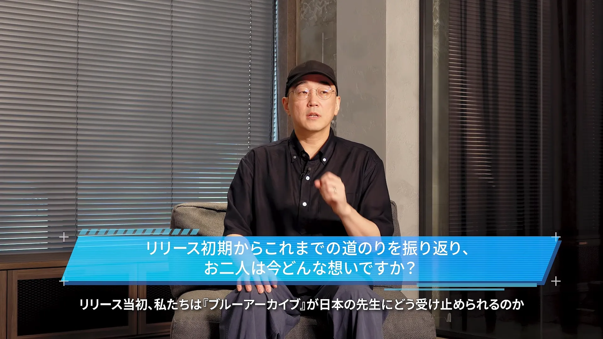
Q. 출시 초기부터 지금까지의 여정을 되돌아보며, 두 분은 지금 어떤 심정이신지?
김용하
출시 당시에는 저희는 블루 아카이브가 일본 선생님들께 어떤 식으로 보여질지 전혀 알지 못한 채로 시작을 했습니다.
솔직히 힘든 일도 적지 않았습니다.
개발 스튜디오가 중요하게 여기는 가치와 이를 일본 선생님들께 어떤 형태로 전달할지에 대해서 처음에는 시행착오를 겪으면서 서로 의견을 조율해 나갔습니다.
표현의 세부 사항이라든가 단어 선택이라든가 이런 세부에 대해서 의견을 나누면서 하나하나씩 구체화를 해 나갔습니다.
이러한 소통을 통해서 일본 선생님들과 진솔하게 마주해 왔기에 블루 아카이브가 일본 선생님들께 받아들여질 수 있었다고 생각합니다.
지난 6년 동안은 개발사와 퍼블리셔라는 관계이면서도 동지로서 서로 힘을 합해서 블루 아카이브를 함께 키워 온 시간이었습니다.
지금 블루 아카이브에는 요스타와 함께 고민하고 논의하고 결정한 것들이 수없이 많이 있습니다.
이는 체제가 바뀌더라도 사라지지 않을 것이고 우리가 계승해 나가야 할 것입니다.
감사한 마음과 함께 그 무게를 짊어지게 될 책임감을 동시에 느끼고 있습니다.
리헝달
서비스 시작 때부터 개발팀의 블루 아카이브에 대한 강한 집념과 열정을 느껴 왔습니다.
무엇보다도 서브컬처 문화, 미소녀 문화에 대한 이해력과 해상도가 굉장히 뛰어난 팀이었기 때문에 함께 일하기에 무척 수월하다고 생각했습니다.
실제로 일본 서비스 전개에 관해서도 두 회사가 항상 의견을 교환하면서 더 좋은 것을 유저분들께 제공할 수 있도록 늘 노력해 왔습니다.
목적은 일관되게 선생님들께 더 나은 서비스와 콘텐츠를 제공하는 것이었기 때문에, 그 부분의 최대공약수를 찾는 것 또한 무척 중시해 왔습니다.
기본적으로 개발팀 분들이 작품 그 자체를 계속해서 소중히 아끼고 계신 상황이므로, 아마 앞으로도 그 스탠스는 변하지 않을 것이라 생각합니다.
그 점에 대해서는 안심하셔도 좋을 것 같습니다.
그리고 저희 요스타로서도 일본의 선생님들과 작품을 잇는 역할을 담당했던 것에 대해 굉장히 큰 자부심을 가지고 있습니다.
이 소중한 작품에 6년간 함께할 수 있어서 정말로 감사드립니다.
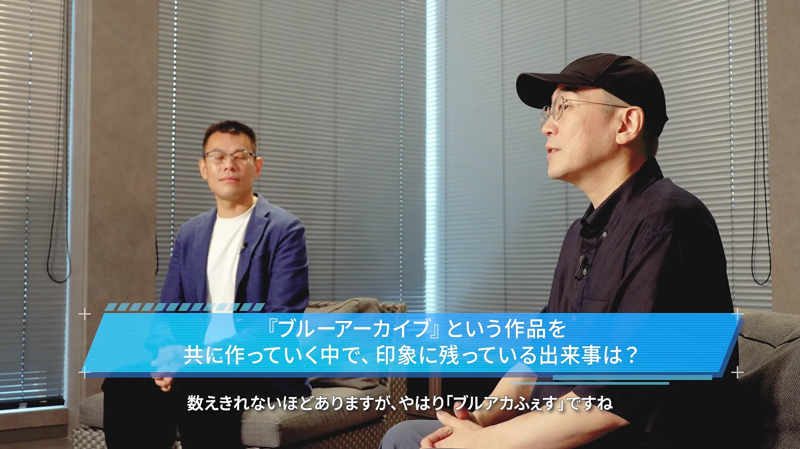
Q. 『블루 아카이브』라는 작품을 함께 만들어 가는 과정에서, 인상 깊게 남은 일은?
김용하
정말 셀 수 없이 많이 있지만 하나를 말씀드리자면 역시 블루아카 페스네요.
새로운 학생이 나온다는 것을 발표하는 순간에 행사장에서 터져 나온 환호성을 가까이에서 들을 수가 있었고,
개발 스튜디오에서는 평소에 화면을 통해 선생님들의 반응을 상상하면서 개발을 진행하게 됩니다.
그 학생이 어떻게 받아들여질지 발표가 이루어지는 그 순간까지는 저희는 알 수는 없거든요.
그렇기 때문에 눈앞에서 선생님들이 놀라워하시고 기뻐하시는 모습을 직접 볼 수 있었던 것은 개발자로서 정말 기쁜 경험이었습니다.
또한 최근에는 3D 라이브에서 저도 모르게 가슴이 좀 뭉클해졌습니다.
학생들이 무대 위에서 노래하고 춤추고 움직이는 모습을 봤을 때 개발에 참여해 온 입장이지만 마치 한 명의 관객처럼 넋을 잃고 저도 쳐다볼 수밖에 없었는데요.
이러한 자리를 마련해 주신 요스타 님께 깊이 감사드리고,
또 저희가 만든 타이틀을 선생님들과 같은 공간에서 함께 나눌 수 있게 해 주신 덕분에 비로소 그런 순간들이 탄생할 수 있었다는 것을 실감했습니다
타이틀이 개발자의 손을 떠나서 선생님들의 마음속에서 이렇게 살아 숨 쉬고 있다는 것을 깨닫게 해 준 이 경험들은 절대 잊을 수 없을 것입니다.
리헝달
블루 아카이브의 서비스 시작 당시를 돌아보면 결코 순풍에 돛 단 듯 순조로웠다고는 할 수 없을 것 같습니다.
그도 그럴 것이 2021년, 코로나19 사태의 한가운데였기 때문에 기본적으로 양사가 직접 대면해서 이야기할 기회가 무척 적었고,
실제로 그로 인해 발생하는 문제나 양사의 경험 부족 등 여러 외부 요인들도 있었기 때문에 꽤나 괴로운 시기도 있었습니다.
그럼에도 불구하고 두 회사가 힘을 합쳐 초기의 고난을 극복하고, 서서히 많은 선생님들께 받아들여질 수 있었다는 점에 대해서는 엄청난 자부심을 가지고 있습니다.
코로나19가 수습된 이후에는 세상이 서서히 일상으로 돌아가면서, 그때부터는 주년 이벤트나 블루아카 페스 같은 대규모 이벤트 등도 개최할 수 있게 되었습니다.
저희 요스타로서도 그때부터 선생님들의 생생한 목소리나 열기를 직접 느낄 수 있어서 굉장히 기뻤습니다.
코미케나 페스, 콜라보 등 게임 안에만 머무는 것이 아니라 게임 외적인 영역까지 작품이 확장될 수 있도록 정말 꽤나 힘을 쏟았습니다.
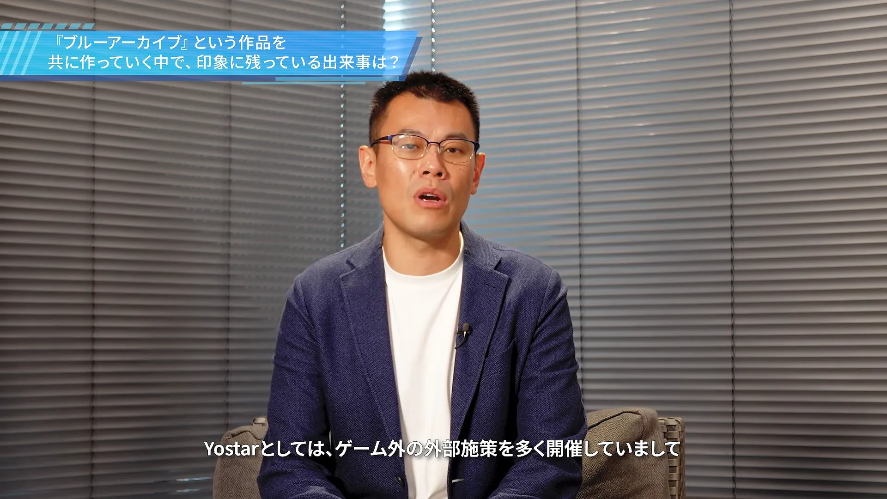
리헝달
요스타로서는 게임 외적인 외부 시책을 많이 개최해 왔는데,
선생님들께서 수평적인 유대감을 느끼고 블루 아카이브의 커뮤니티를 형성하는 데 있어서도 그러한 자리들이 기여했다고 생각하기 때문에,
그 부분은 저희에게도 무척 추억이 깊은 지점입니다.
그러한 과정들을 통해 캐릭터와 이야기가 선생님들의 일상생활에 스며들 수 있었다는 실감이 들기 때문에 굉장히 기쁘게 생각합니다.
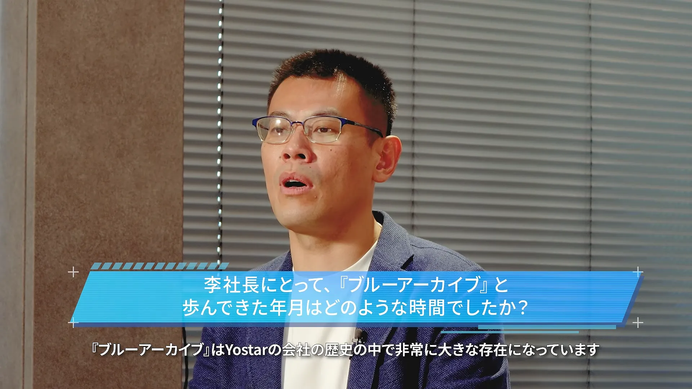
Q. 이 사장님께 있어서, 『블루 아카이브』와 함께 걸어온 세월은 어떤 시간이었나요?
리헝달
네, 블루 아카이브는 요스타에게 있어 회사의 역사 내에서 매우 큰 존재입니다.
말하자면 저희에게는 '두 번째 창업'과도 같은 의미라고 생각합니다.
앞서 말씀드린 대로 서비스를 시작했던 당초에는 결코 순탄치만은 않았고,
두 회사 모두 괴로워하고 발버둥 치며 여러 시행착오를 겪었던 시기도 있었습니다.
그럼에도 서비스가 점차 스며들면서 수많은 선생님들의 응원을 받게 되었고, 작품이 서서히 궤도에 올라 지금처럼 크게 성장할 수 있었습니다.
저희 요스타로서도 기본적으로 생방송이나 이벤트, 음악, 굿즈 등 게임을 넘어선 다양한 도전을 할 수 있는 기회를 얻게 되어 그 점 또한 대단히 감사하게 생각하고 있습니다.
예를 들어 아이돌 콘셉트의 라이브처럼 일반적인 틀을 뛰어넘는 무모한 도전도 해볼 수 있었기에 저 개인적으로도 무척 기쁘게 생각합니다.
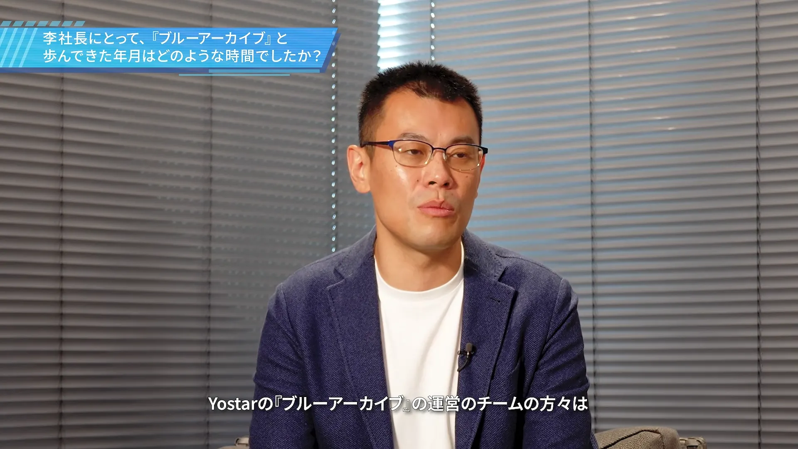
리헝달
기본적으로 요스타의 블루 아카이브 운영팀 분들이 이 작품 자체에 대해 엄청난 열정을 가지고 있습니다.
애정이 너무 과한 직원분들도 가끔 계셔서, 그 부분은 조금 컨트롤하기 어려운 면도 있습니다.
일에 너무 몰두하다 보니 좀처럼 집에 돌아가지 않는다거나, 계속해서 테스트 플레이만 하고 있다거나 하는 상황도 자주 발생해서,
개인적으로도 기쁜 마음 반, 무거운 책임감 반으로 계속 받아들이고 있는 상황입니다.
그렇게 직원들의 애정이 깊다 보니, 물론 개발진분들과 가끔 최대공약수의 합의점을 찾는 것이 어려운 부분도 종종 있었으리라 생각합니다만,
결과적으로 모두 각자의 애정을 가지고 임하고 있는 상황이기 때문에 경영자로서도, 한 사람의 오타쿠로서도,
2차원 미소녀를 사랑하는 인간으로서도 엄청나게 자부심을 느끼고 있습니다.
블루 아카이브가 런칭한 2021년은, 조금 개인적인 이야기라 송구스럽습니다만 제 딸이 태어난 해이기도 합니다.
실제로 저에게 있어서는 블루 아카이브를 키우는 것도 딸을 키우는 것과 똑같이 여기고 있었기 때문에, 소중하고도 밀도 높은 6년간이었다고 생각하며 정말로 감사드립니다.
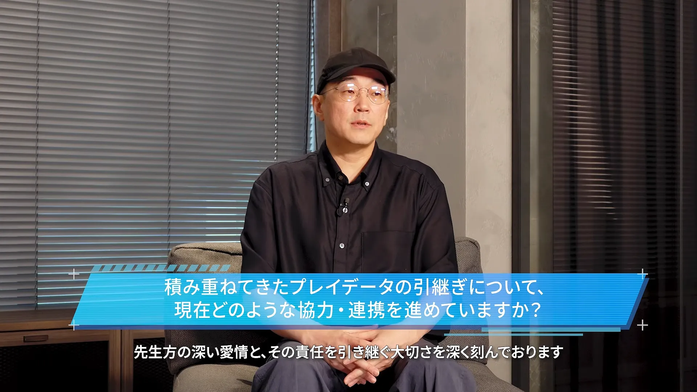
Q. 그동안 쌓여온 플레이 데이터의 이관에 대해, 현재 어떤 협력 및 연계를 진행하고 계신가요?
김용하
그 애정의 깊이, 그 사랑을 이어받는 것, 그 책임을 이어받는 것이 정말 중요하다는 것을 알고 있습니다.
선생님들과 학생들이 함께해 온 그 시간과 추억을 그대로 이어받아서 앞으로도 블루 아카이브를 즐겁게 플레이하실 수 있도록 하는 것이
저희에게 있어서 가장 중요한 책임이라고 생각을 하고 있습니다.
현재 플레이 데이터와 보유 중이신 아이템, 그리고 학생들을 확실하게 이전해서 이어 나갈 수 있도록
요스타와 넥슨게임즈, 그리고 넥슨 3사가 협력해서 신중하게 준비를 진행하고 있습니다.
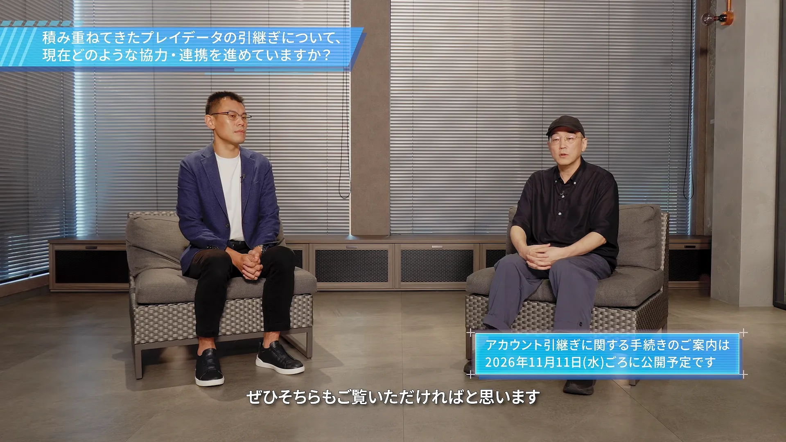
최근 공개했던 퍼블리셔 변경 관련 특설 페이지에서 자세한 방법을 수시로 전달드릴 예정이니까요, 꼭 해당 페이지를 확인해 주시면 감사하겠습니다.
※ 계정 이관(인계)에 관한 절차 안내는 2026년 11월 11일(수)경에 공개될 예정입니다.
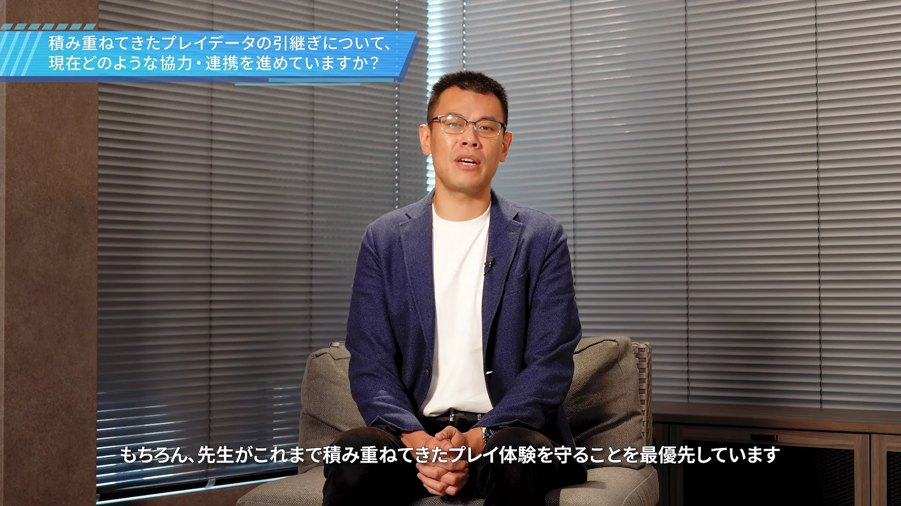
리헝달
물론 선생님들께서 지금까지 쌓아 오신 플레이 경험을 지키는 것을 최우선으로 하고 있습니다.
기본적으로 저희 요스타로서도 끝까지 책임을 지고 이 인수인계 업무를 넥슨 측과 함께 연계하면서 문제없이 진행해 나가고자 하니,
그 부분에 관해서는 안심해 주십시오
기본적으로 필요한 정보나 작업 연계 등은 매끄럽게 진행될 수 있도록 노력하겠습니다.
선생님들 입장에서도 결코 불이익이나 혼란이 생기지 않도록 상세한 공지나 정보 공개 등을 수시로 진행할 예정이오니,
그 부분은 넥슨 측과 협의하며 적절한 타이밍에 정확한 정보를 발신해 나가도록 하겠습니다.
상세한 내용에 관해서는 특설 페이지 등을 통해 앞으로 하나씩 제대로 안내해 드리고자 합니다.
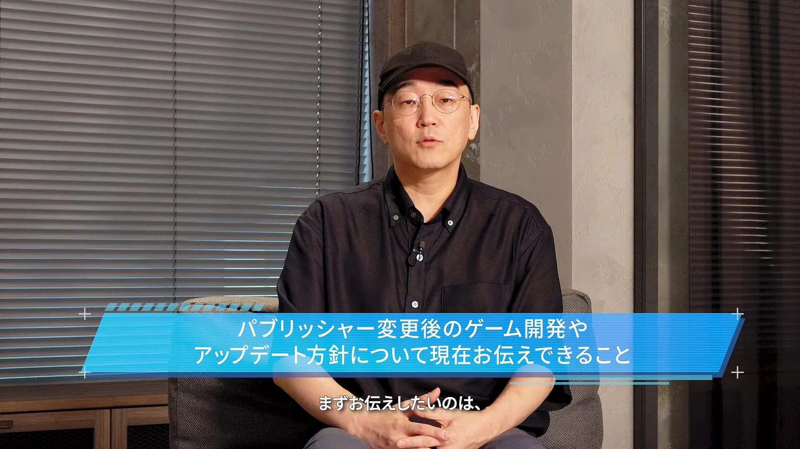
Q. 퍼블리셔 변경 후의 게임 개발이나 업데이트 방침에 대해 현재 말씀드릴 수 있는 내용
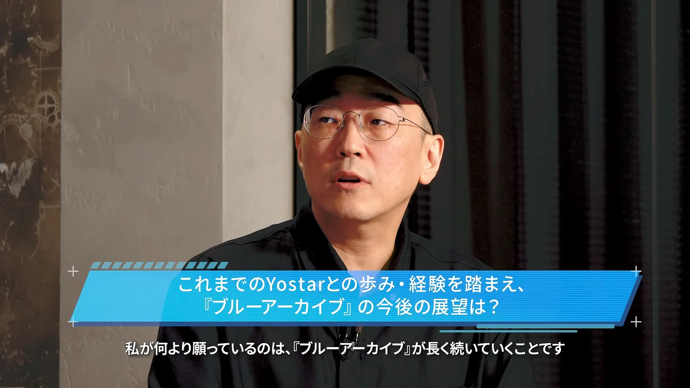
Q. 지금까지 요스타와 함께한 여정·경험을 바탕으로 본, 『블루 아카이브』의 향후 전망은?
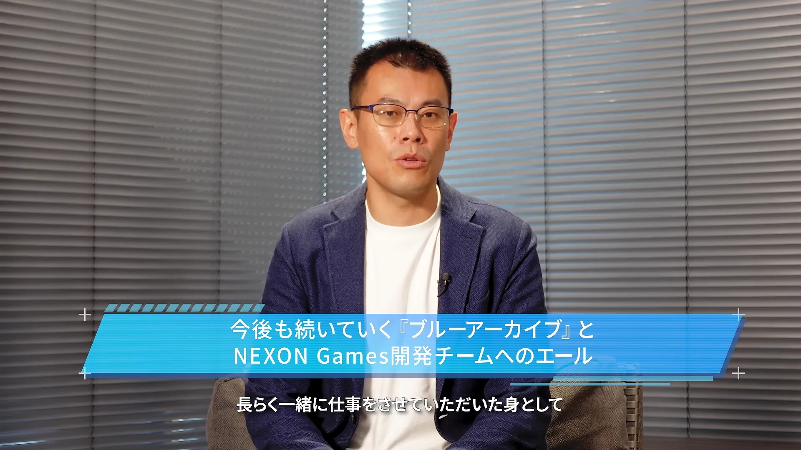
Q. 앞으로도 계속될 『블루 아카이브』와 넥슨게임즈 개발팀을 향한 응원의 메시지
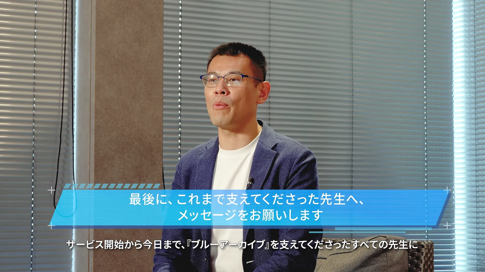
Q. 마지막으로, 지금까지 응원해 주신 선생님들께 한 말씀 부탁드립니다.
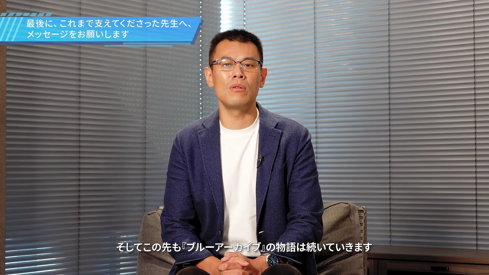
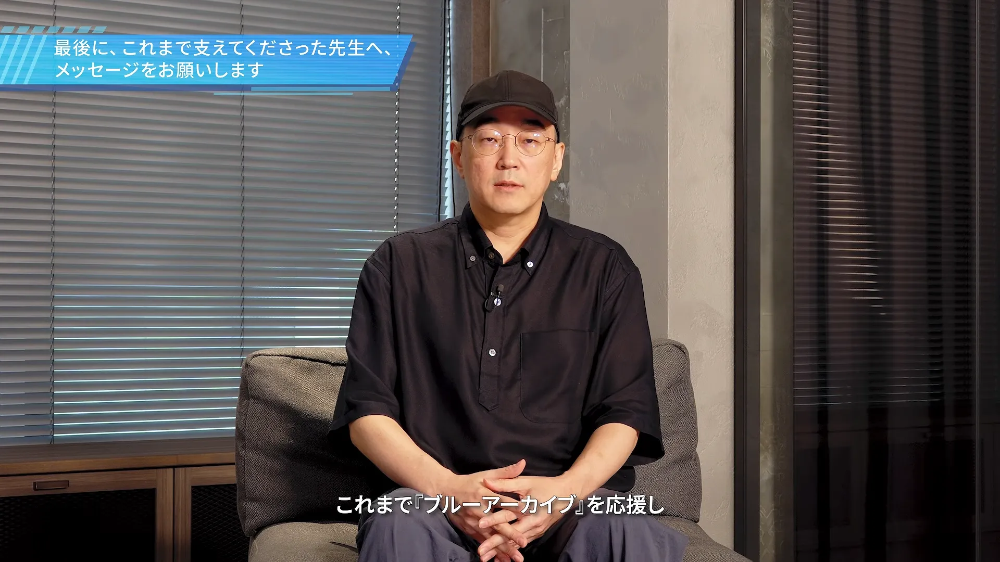
댓글
수집 당시 댓글 70개
ㅇㅇ · 11.06 15:04:11
마리생수병 · 11.06 15:04:53
ㅁ맘ㅁ · 11.06 15:05:44
안경닦개 · 11.06 15:06:33
ㅇㅇ · 11.06 15:06:58
카노 · 11.06 15:07:04
고닉임 · 11.06 15:08:07
노루왕 · 11.06 15:08:49
ㅇㅇ · 11.06 15:10:12
· 피르비스 · 11.06 15:12:11
· 레이져라몬 · 11.06 15:22:22
· ㅇㅇ · 11.06 15:41:20
ㅇㅇ · 11.06 15:15:11
ㅊㅌㅋ · 11.06 15:16:42
· ㅇㅇ · 11.07 05:32:44
· DATEaLIVE · 11.07 05:40:29
다다익선 · 11.06 15:19:42
ㅇㅇ · 11.06 15:20:22
Shymashino · 11.06 15:21:17
ㅇㅇ · 11.06 15:32:00
ㅇㅇ · 11.06 15:52:29
시치도유키노 · 11.06 16:08:40
MrLazy · 11.06 16:08:57
애애앵. · 11.06 16:27:09
넵튠 · 11.06 16:35:29
ㅆㅅ · 11.06 18:02:53
ㅇㅇ · 11.06 18:12:24
스카이림 · 11.06 18:50:39
파치카 · 11.07 01:47:05
ㅇㅇ · 11.07 03:24:17
ㅇㅇ · 11.07 03:41:11
ㅇㅇ · 11.07 04:05:04
고중력 · 11.07 04:47:39
ㅇㅇ · 11.07 04:58:07
· ㅇㅇ · 11.07 05:50:10
· ㅇㅇ · 11.07 07:59:36
· ㅇㅇ · 11.07 09:46:35
ㅇㅇ · 11.07 05:05:10
· ㅇㅇ · 11.07 05:52:27
· ㅇㅇ · 11.07 06:15:48
ㅇㅇ · 11.07 05:20:58
ㅇㅇ · 11.07 05:34:50
돈 슨
ㅇㅇ · 11.07 05:46:26
ㅇㅇ · 11.07 06:17:30
· ㅇㅇ · 11.07 13:33:43
ㅇㅇ · 11.07 06:43:29
페도겜
· ㅇㅇ · 11.07 13:33:38
ㅇㅇ · 11.07 06:45:00
· ㅇㅇ · 11.07 13:33:31
ㅇㅇ · 11.07 07:01:23
ㅇㅇ · 11.07 07:44:16
ㅇㅇ · 11.07 08:00:40
블두순
· ㅇㅇ · 11.07 13:33:25
ㅇㅇ · 11.07 08:08:23
ㅇㅇ · 11.07 08:34:50
ㅇㅇ · 11.07 09:07:40
ㅇㅇ · 11.07 09:42:16
· ㅇㅇ · 11.07 13:33:18
ㅇㅇ · 11.07 09:48:08
· ㅇㅇ · 11.07 13:33:13
ㅇㅇ · 11.07 09:54:13
· ㅇㅇ · 11.07 09:55:05
ㅇㅇ · 11.07 11:43:44
ㅇㅇ · 11.07 12:42:38
· ㅇㅇ · 11.07 13:33:06
ㅇㅇ · 11.07 12:49:49
존버맨 · 11.07 12:51:37
ㅇㅇ · 11.07 15:10:55
JungNu · 11.07 15:22:02
ㅇㅇ · 11.07 18:11:59